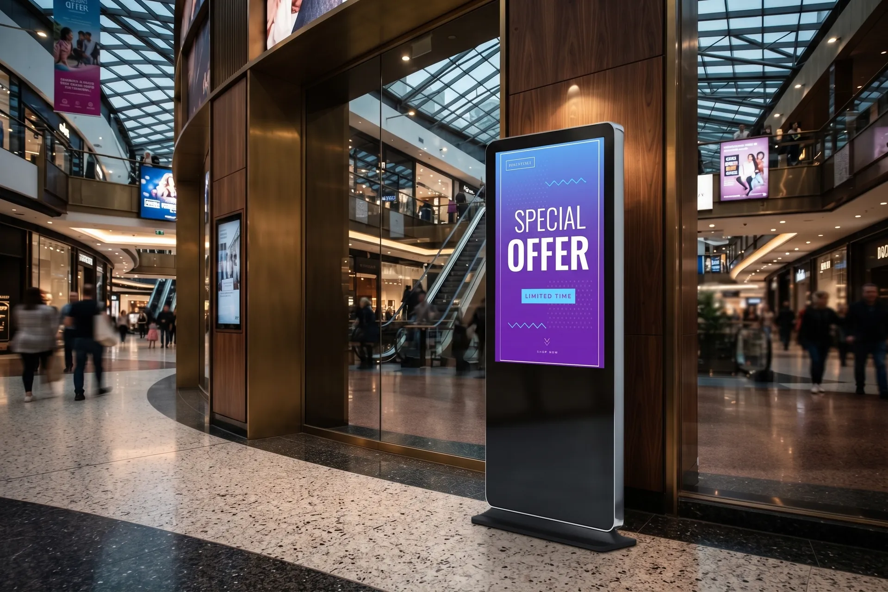
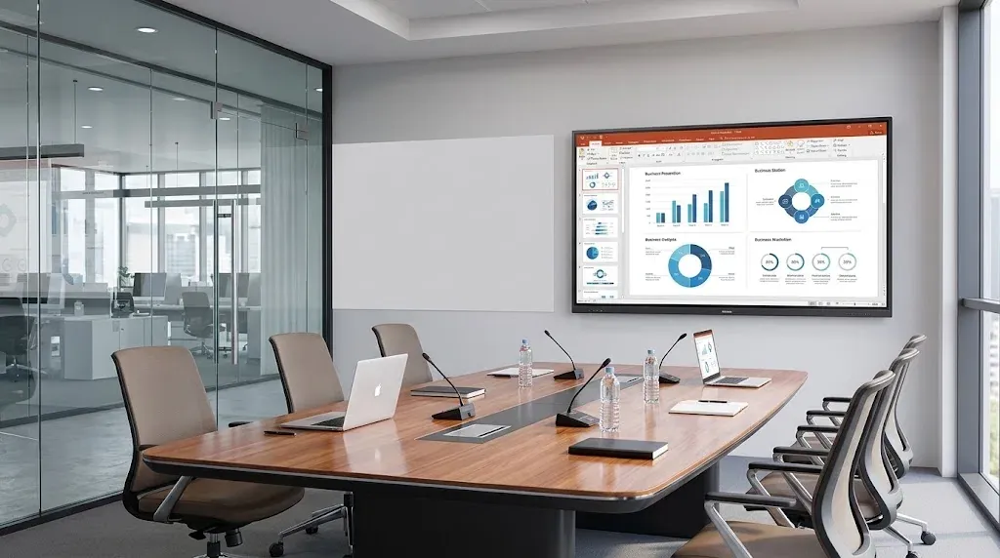
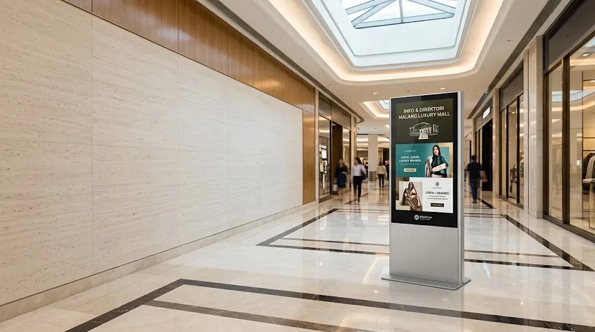
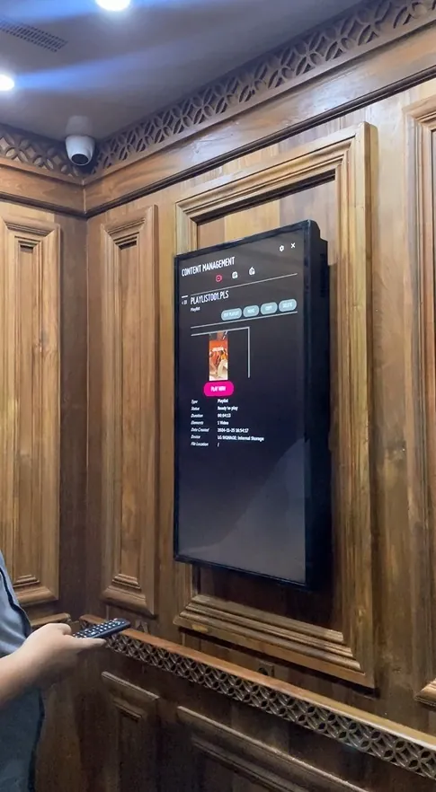
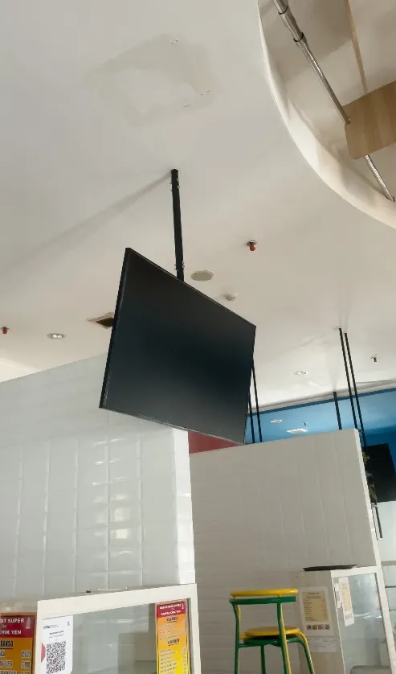
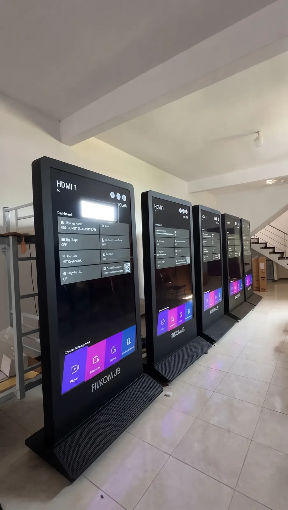

Jual Digital Signage Jakarta untuk Bisnis, Pendidikan, dan Perkantoran
Display profesional Samsung, LG, dan Hikvision untuk promosi toko, menu digital, informasi lobi, hingga kiosk layanan. Kami bantu pilih ukuran yang tepat, kirim ke seluruh Indonesia, dan pasang di lokasi Anda.
Pilihan Digital Signage Samsung, LG, dan Hikvision
Layar digital signage dan professional display untuk menu digital, promosi toko, informasi lobi, dan ruang meeting. Bandingkan spesifikasi tiap model, lalu konsultasikan kebutuhan Anda dengan tim kami.
Jenis-Jenis Digital Signage
Kenali jenis digital signage untuk promosi, menu, pengumuman, dan penyampaian informasi di lingkungan bisnis maupun fasilitas publik.
Digital Signage untuk Berbagai Kebutuhan
Pilih solusi display berdasarkan lokasi dan informasi yang ingin Anda sampaikan.

Kesan profesional sejak tamu masuk lobi.
Satu layar untuk menyambut tamu, menampilkan profil perusahaan, dan menyampaikan informasi internal tanpa perlu mencetak ulang.
- Sambutan tamu dan profil perusahaan
- Agenda rapat dan pengumuman internal
- Informasi K3 dan jadwal ruang meeting
Promosi yang menarik perhatian pengunjung.
Ganti promo dan katalog dalam hitungan menit di seluruh toko, termasuk layar etalase berkecerahan tinggi di area yang terang.
- Promo dan diskon musiman
- Katalog dan video produk
- Display etalase menghadap pengunjung

Menu jelas, pesanan lebih lancar.
Menu board digital yang mudah diperbarui dan kiosk self-order membantu pelanggan memilih lebih cepat di jam sibuk.
- Menu dan harga yang mudah diganti
- Promo paket di jam tertentu
- Kiosk pemesanan mandiri

Informasi kampus sampai ke semua orang.
Kiosk dan layar dinding untuk jadwal, pengumuman, dan layanan akademik yang bisa diperbarui dari satu tempat.
- Jadwal dan pengumuman akademik
- Maklumat pelayanan dan zona integritas
- Petunjuk area dan informasi acara
Bagaimana Memilih Digital Signage yang Tepat?
Empat hal berikut menentukan model yang tepat, supaya layar terlihat jelas dan sesuai dengan cara pemakaiannya.
Panduan Ukuran Cepat
- 24″
- Kiosk dan meja layanan
- 43″
- Resepsionis dan ruang kecil
- 49–55″
- Lobi dan ruang meeting
- 65″
- Area luas, jarak pandang jauh
Tentukan lokasi dan tingkat kecerahan
Ruangan dalam dengan cahaya normal cukup 300–500 nit. Untuk etalase, dekat dinding kaca, atau area yang sangat terang, pilih 700 nit seperti LG UH7J.
Sesuaikan ukuran dengan jarak pandang
Semakin jauh posisi penonton, semakin besar layar yang dibutuhkan. Gunakan panduan ukuran cepat sebagai patokan awal.
Tentukan jam operasional
Layar yang menyala selama jam kerja cukup model 16/7 seperti LG UL3J. Untuk lobi, rumah sakit, atau area publik yang menyala sepanjang hari, pilih model 24/7 seperti LG UH5J dan UH7J.
Konsultasikan dengan tim kami
Ceritakan lokasi, jumlah unit, dan konten yang ingin ditampilkan. Kami bantu rekomendasikan model Samsung, LG, atau Hikvision yang paling sesuai.
Pertanyaan yang Sering Diajukan
Digital signage adalah layar digital untuk menampilkan promosi, menu, pengumuman, jadwal, dan informasi layanan yang kontennya bisa diganti kapan saja tanpa mencetak ulang banner atau poster.
Digital signage (professional display) dirancang untuk penggunaan komersial: sanggup menyala lebih lama setiap hari (misalnya 16/7 atau 24/7), umumnya lebih terang, dan mendukung penjadwalan konten. TV biasa dirancang untuk pemakaian rumah beberapa jam sehari, sehingga kurang cocok untuk layar promosi yang menyala seharian.
Harga tergantung merek, ukuran (24 hingga 65 inci), dan tipe: wall-mounted, floor-standing/totem, kiosk, atau signage box. Klik Minta Harga via WhatsApp di halaman produk dan sebutkan model, jumlah unit, serta kota pemasangan agar kami kirimkan penawaran yang sesuai.
Ya. Semua produk Samsung, LG, dan Hikvision yang kami jual bergaransi resmi.
Bisa. Kantor kami di Tanah Abang, Jakarta Pusat, dan kami melayani pengiriman ke seluruh Indonesia.
Ya. Tim teknisi kami dapat memasang bracket dinding atau floor stand, mengatur koneksi jaringan, dan menyiapkan pemutaran konten. Lingkup dan biayanya bisa dikonsultasikan sesuai lokasi dan jumlah unit.
Sebagai patokan: 24 inci untuk kiosk dan meja layanan, 43 inci untuk resepsionis atau ruang kecil, 49–55 inci untuk lobi dan ruang meeting, serta 65 inci untuk area luas dengan jarak pandang jauh. Kami bantu hitung sesuai jarak pandang di lokasi Anda.
Samsung (Smart Signage QE-T 4K dan kiosk KM24C), LG (UHD Signage UH5J, UH7J, dan UL3J), serta Hikvision (wall-mounted, floor-standing, dan Digital Signage Box).
Temukan Display yang Tepat untuk Kebutuhan Anda
Masih bingung menentukan ukuran, tipe display, atau solusi digital signage yang sesuai? Tim Cahaya Mustika Internesia siap membantu Anda.